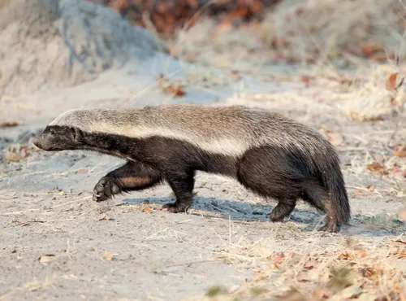

식육목 족제비과의 동물로 라텔(Ratel)이라고도 불린다.
주로 건조지대에 살며, 사바나/삼림에까지 광범위하게 서식하는데,
터널을 파기 쉬운 구릉지대를 좋아한다.
족제비과답게 울버린과 함께 체급대비 근력이 포유류 중 가장 뛰어나다.
이는 근섬유가 모두 속근으로 이루어졌기 때문이다.
그렇기 때문에 고양이과보다도 압도적으로 좋은 순발력,
민첩성과 근력으로 자기보다 큰 동물을 잡아 죽인다.
이러한 압도적인 신체능력과 매우 호전적이고 겁없는 성질로 인해 아프리카에서 악명이 자자하다.
또한 족제비과 특유의 전투방식(대부분의 공격을 동체시력과 순발력으로 회피하고 빈틈을 공략하여 피해를 최소화하며 가장 효율적으로 적을 처치한다.)으로 인해 1v1 전투력이 상당하다.
비슷한 크기인 고양이과의 서벌이나 카라칼은 물론이고,
그것보다 더 큰 개체도 이 벌꿀오소리를 이기긴 힘들다.
동 체급에선 적수가 거의 없다고 보는 것이 타당하다.
벌꿀오소리 1마리가 자신을 공격하려는 서투른
어린 사자 4마리를 물리치고 도망가는 영상도 있다.
벌꿀오소리에 대해
잡식성이고 식욕이 굉장히 왕성하기 때문에 소형 파충류, 설치류, 토끼, 소형 원숭이 등
각종 동물 외에 알뿌리나 과일 같은 식물은 물론이고 새알과 썩은 고기도 잘 먹는다.
포유류는 물론 위험하기로 소문난 전갈, 독거미, 지네, 기타 독충이나 독사도
잘 잡아먹는데, 케이프코브라, 이집트코브라, 스피팅코브라, 검은맘바, 초록맘바,
제임슨맘바, 뻐끔살무사, 사막뿔살무사, 가시북살무사, 러셀살무사, 우산뱀, 인도코브라
같은 악명 높은 독사뿐 아니라 2~3m 길이의 비단뱀도 상당히 잘 먹으며 독사가 라텔과
1대 1로 맞붙을 때 십중팔구 벌꿀오소리의 민첩성과 기술을 이겨내지 못하고 한 끼 단백질 공급원으로 전락한다.
무엇보다 벌꿀오소리의 장점이면서도 무서운 것은 독에 대한 내성이 매우 뛰어나다는 것이다.
독사에게 물리면서도 악착같이 공격을 이어간다. 상대한 독사가 죽은 것을 확인한 뒤에도 머리만은
완벽하게 먹어치우고 나서야 비로소 퍼진다. 이빨이 엄청나게 튼튼해서 독사의 머리를 뼈째로 씹어먹는다.
그러고 1~2시간쯤 자고 일어나서 해독이 다 된 후 나머지 몸뚱이를 먹는다.
물론 자고 있는 상태에서는 다른 포식자의 공격에 취약한 무방비 상태지만,
라텔의 더러운 성질머리는 인간계 동물계 할 거 없이 유명한지라
포식자들이 알아서 피하는 경우가 많아서 별 문제가 없다.
포식자 입장에서는 독 때문에 그런건지 아니면 그냥 퍼질러서 자는건지 알턱이 없으니
그냥 엮이기 싫으니까 말이다.